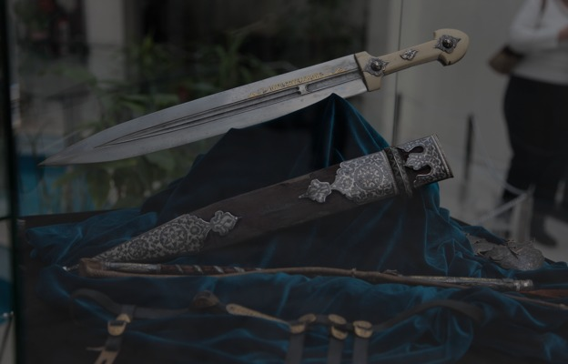
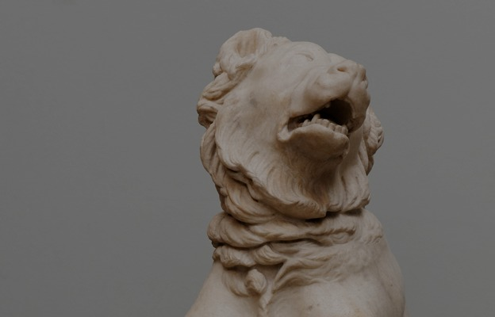
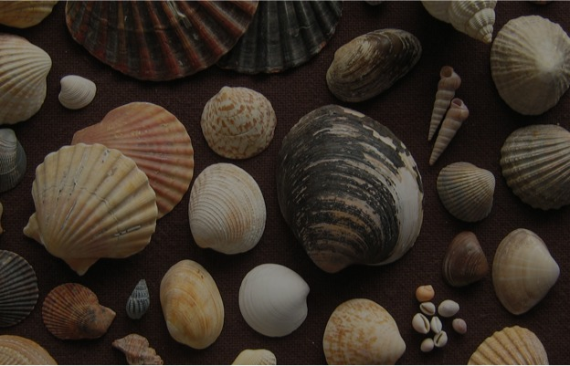
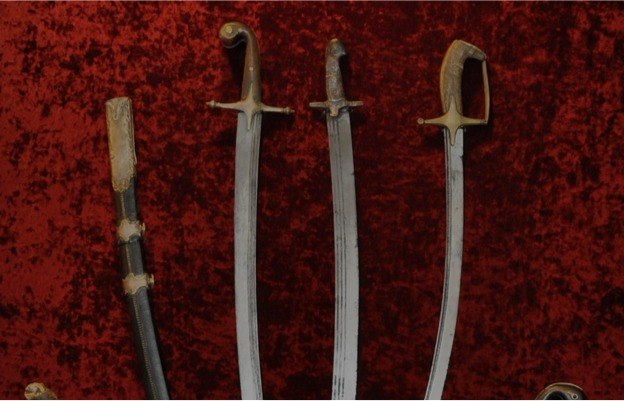

Выставки

Ecole de Paris II
11.03.2016 – 30.04.2013 • Киев, Национальный музей искусств имени Богдана и Варвары Ханенко
ДЕТАЛИ ВЫСТАВКИ

Верный друг. Образ собаки в европейском искусстве
11.03.2016 – 30.04.2013 • Харьков, галерея АВЭК
ДЕТАЛИ ВЫСТАВКИ

Планета океан
11.03.2016 – 30.04.2013 • Харьков, галерея АВЭК
ДЕТАЛИ ВЫСТАВКИ

Оружие козацких времен
11.03.2016 – 30.04.2013 • Запорожье. Национальный заповедник «Хортица», Музей истории запорожского казачества
ДЕТАЛИ ВЫСТАВКИ
Предыдущая
1
2
3
Следующая